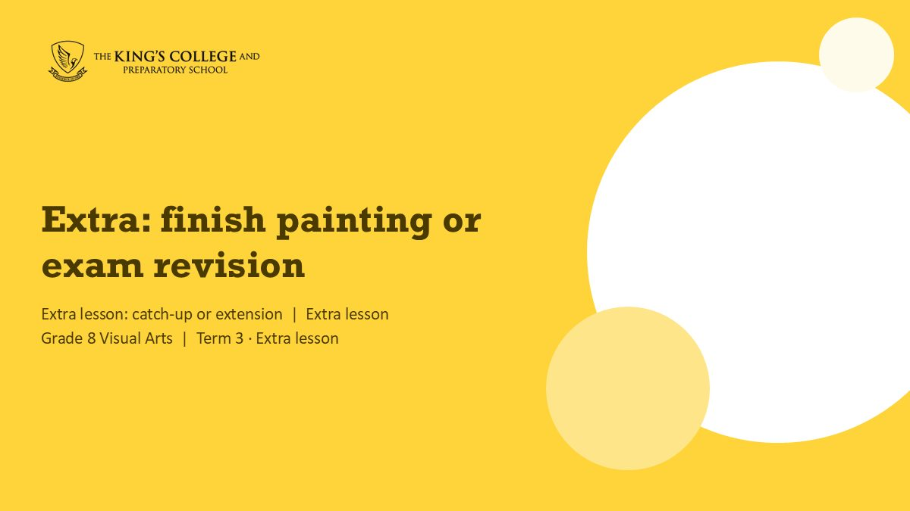

Term 3 · Extra lesson · Extra lesson: catch-up
Extra: finish painting or exam revision
Start here
Today I will
- Today I will finish any outstanding painting
- Today I will revise my art vocabulary
- Today I will practise a five-level analysis of a Sekoto painting
Think first
Painting to finish, or exam to prepare for? Choose your path for today.
Words to know
- Visual analysis
- Looking closely at an artwork and explaining what you see and what it means.
- Context
- The time, place and events in which an artwork was made.
- Blocking in
- Painting the main areas of colour simply, without detail.
- Complementary colours
- Colours opposite each other on the colour wheel.
- Social realism
- Realistic art that shows ordinary people's hard living and working conditions.
Slides

Notes
Finish painting, or revise for the year-end exam (vocabulary quiz; analyse a Sekoto painting with the 5 steps).
Exam revision: the five levels
- First reaction: What do I notice and feel?
- Formal analysis: Elements and principles, and their effect.
- Content: What is it about?
- Context: Sekoto's life and time: township life in the 1940s.
- Opinion supported by facts: My view, with evidence.
Remember
Know the words, follow the five levels, and support your opinion with facts.
Practical
You need: Acrylics, brushes, vocabulary booklet, journal
Painting catch-up or exam practice
- Painters: finish your Starry Night study and reflection.
- Revisers: write the vocabulary quiz and check your answers in the booklet.
- Revisers: write a five-level analysis of the Sekoto painting on the board.
- Use at least five art words and underline them.
- Everyone: hand in finished work before clean-up.
Test yourself
- What is level 4 of visual analysis?
- Name two things Sekoto often painted.
- Which colour is complementary to yellow?
Show answers
1. Context (zeitgeist): when, where and why the work was made. 2. Any two: township streets, people at work, musicians, family and daily life. 3. Purple (violet).